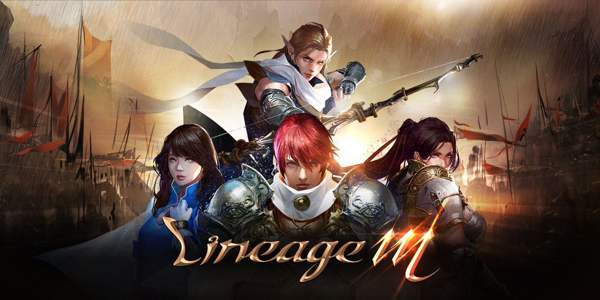

NCSOFT · 2017 ~
리니지M 원격 임대
2017년 출시 이후 꾸준히 서비스 중인 엔씨소프트의 대표 모바일 MMORPG 리니지M은 자동사냥으로 성장하는 시간이 길어, 휴대폰을 계속 켜두면 배터리 소모와 발열 문제가 생깁니다.
원격PC에서 퍼플(PURPLE) 또는 앱플레이어로 리니지M을 24시간 돌리고, 휴대폰은 원격 앱으로 상태만 확인하세요.
퍼플 멀티 로그인앱플레이어 지원24시간 자동사냥
리니지M을 원격PC로 돌리면 좋은 점
- 퍼플 멀티 로그인 다계정 — 엔씨소프트 퍼플은 PC 사양이 허락하는 만큼 여러 계정 창을 동시에 띄울 수 있습니다. 본캐 + 부캐 파티 사냥을 혼자서도 운영할 수 있습니다.
- 휴대폰 ↔ 원격PC 이어하기 — 휴대폰으로 같은 계정에 접속하면 퍼플 쪽은 대기 상태가 되고, 다시 퍼플로 전환하면 PC에서 이어서 진행됩니다. 이동·정비는 휴대폰, 장시간 사냥은 원격PC로 나눠 쓰기 좋습니다.
- 넉넉한 RAM — 모든 옵션이 RAM 24GB 이상(5700G는 32GB)이라 퍼플 권장 RAM 16GB를 넘깁니다. 창을 여러 개 띄울수록 RAM 여유가 중요합니다.
- 앱플레이어 구동도 가능 — 퍼플 대신 LDPlayer·BlueStacks 같은 앱플레이어로 모바일 버전을 띄워 다른 모바일 게임과 함께 운영할 수도 있습니다.
리니지M 추천 임대 옵션
라이젠 5700G
8코어 16쓰레드 · RAM 32GB · 내장 Vega 8
BEST · 다중8코어 16쓰레드 · RAM 32GB · 내장 Vega 8
라이젠 4350G
4코어 8쓰레드 · RAM 24GB · 내장 Vega 6
앱플레이어 다중4코어 8쓰레드 · RAM 24GB · 내장 Vega 6
다계정 운영은 8코어·RAM 32GB인 5700G가 가장 여유롭고, 1~2계정을 앱플레이어로 가볍게 돌린다면 4350G로도 충분합니다. 퍼플의 그래픽 품질을 높게 쓰고 싶다면 외장 그래픽 옵션(라이젠 2600)을 문의해주세요.
리니지M 퍼플(PC) 공식 사양
| 항목 | 최소 | 권장 |
|---|---|---|
| CPU | Intel i5-3570 / Ryzen 3 2200G | Intel i7-7700 / Ryzen 5 3600 |
| RAM | 8GB | 16GB |
| GPU | - | NVIDIA RTX 2060 6GB |
| 운영체제 | Windows 10 64bit | Windows 10 64bit |
엔씨소프트 퍼플(PURPLE) 안내 기준
리니지M 원격 임대 자주 묻는 질문
퍼플(PURPLE)과 앱플레이어 중 어느 쪽이 좋나요?
엔씨소프트 공식 PC 플랫폼인 퍼플은 멀티 로그인과 휴대폰 이어하기를 지원해 리니지M 운영에 가장 편합니다. 앱플레이어는 다른 모바일 게임과 함께 돌릴 때 유리합니다. 원격PC에서는 두 방식 모두 사용 가능합니다.
원격 접속을 끊어도 리니지M 자동사냥이 계속되나요?
네. 원격 접속 프로그램 창을 닫아도 원격PC와 게임은 계속 켜져 있어 게임 내 자동사냥이 이어집니다. 휴대폰으로 다시 접속해 물약·가방 상태만 확인하시면 됩니다.
리니지M 퍼플 다계정은 몇 개까지 가능한가요?
CPU와 RAM 영향이 큽니다. 계정 수가 늘수록 8코어·32GB인 5700G를 권장드리며, 원하시는 계정 수를 알려주시면 맞는 옵션을 안내드립니다.
원격 접속은 어떤 프로그램을 쓰나요?
AnyDesk 또는 Chrome 원격 데스크톱을 사용합니다. 스마트폰·태블릿·PC 어디서든 접속할 수 있습니다.